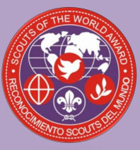

| Introducción |
Base SDM |
Descubrimiento |
Voluntariado |
|  |
Scouts del Mundo Este programa te ofrece la oportunidad de adquirir valores, conocimiento y habilidades para ser ciudadano/a del mundo, una persona capaz de asumir un papel activo en “Hacer del mundo un mejor lugar” para vivir. Según el mensaje incial del Cooperador Nacional para SDM El proceso es muy sencillo, consiste básicamente en nombrar un Cooperador Regional SDM, este a su vez conforma una Base SDM (con 5 rovers de diferentes clanes de la Región, preferiblemente) Desde la Base generaran al menos un Descubrimiento SDM para este año (con forma de curso Scout), los jóvenes que habiendo participado del Descubrimiento decidan voluntariamente asumir un compromiso personal con este, serán quienes desarrollen la etapa de Voluntariado y de es manera accederán al Reconocimiento. |